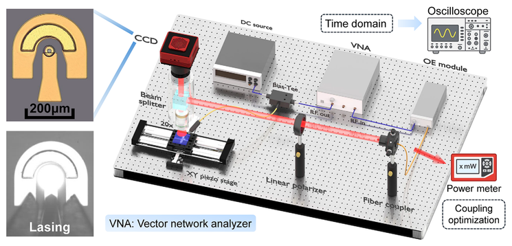
Drive-Efficient GHz-Rate Binary-State Updates Enabled by VCSEL Polarization Switching
Laser & Photonics Reviews, e71890, 2026 · Open Access
[paper]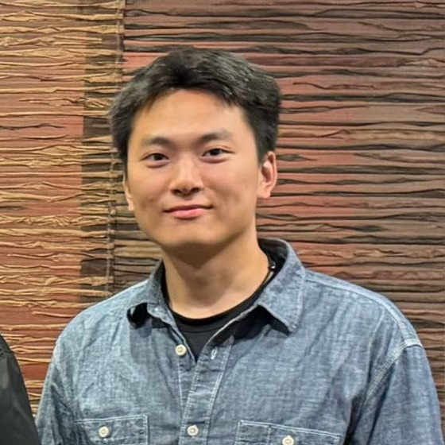
I am a Postdoctoral Research Fellow at National University of Singapore (NUS), working with Professor Benjamin Tee. Prior to that, I received my Ph.D. in Electrical and Computer Engineering at NUS, advised by Professor Aaron Danner.
My research lies at the intersection of photonics and AI, spanning photonic computing hardware for unconventional computing models like Ising machines, photonic AI accelerators based on polarization-engineered VCSELs, and scientific reasoning in VLMs and LLMs.
Turning light into a computational substrate: polarization-encoded VCSEL spins for Ising machines, all-optical annealers with parallel feedback, and integrated matrix engines for neural networks.

Drive-Efficient GHz-Rate Binary-State Updates Enabled by VCSEL Polarization Switching
Laser & Photonics Reviews, e71890, 2026 · Open Access
[paper]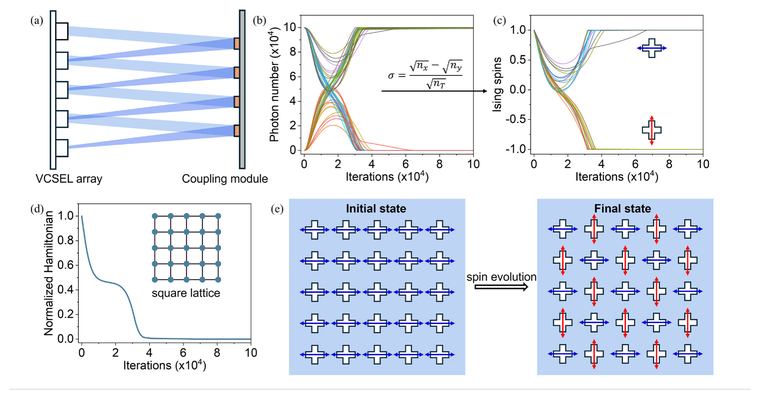
Tailored polarization-switchable VCSEL arrays for photonic Ising computing
Applied Physics Letters 127, 221102, 2025 · Featured Article · highlighted in AIP Scilight
[paper]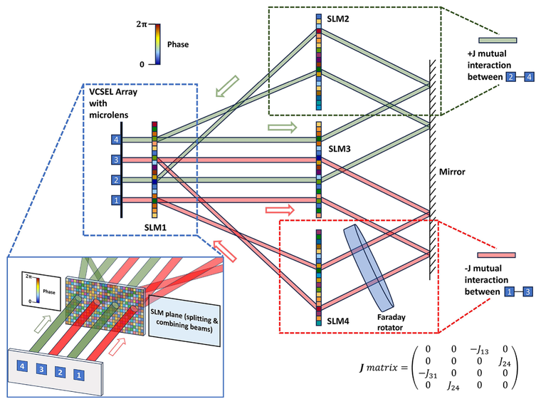
All-Optical Scalable and Programmable VCSEL-based Ising Annealer with Parallel Feedback
Optics Express 33(11), 22119–22131, 2025
[paper]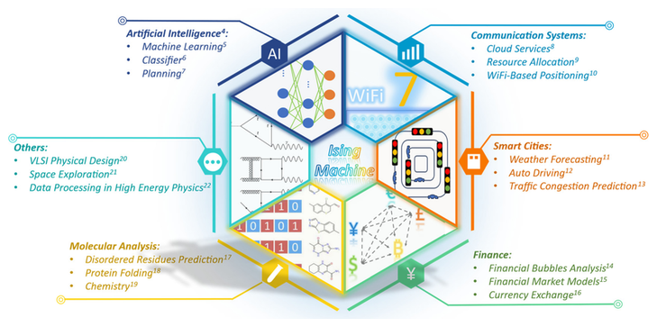
Photonic Ising machines for combinatorial optimization problems
Applied Physics Reviews 11, 041307, 2024 · Review
[paper]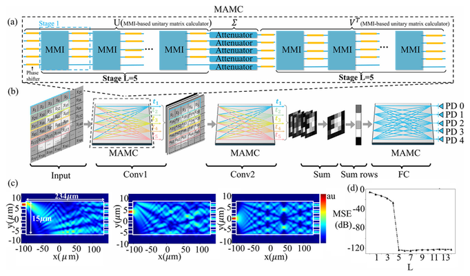
A lithium niobate cascaded MMI-based arbitrary matrix calculator for convolutional neural networks
Optics & Laser Technology 192, 113740, 2025
[paper]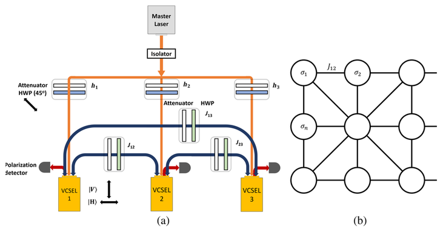
Linear polarization state encoding for Ising computing with optically injection-locked VCSELs
Journal of Optical Microsystems 4, 014501, 2023
[paper]The device layer underneath that hardware. An optical accelerator needs a binary state it can set and flip quickly and cheaply — here that state is the polarization of a vertical-cavity laser, engineered through aperture shape and mesa orientation, from cleanroom fabrication to spin-flip-model dynamics.
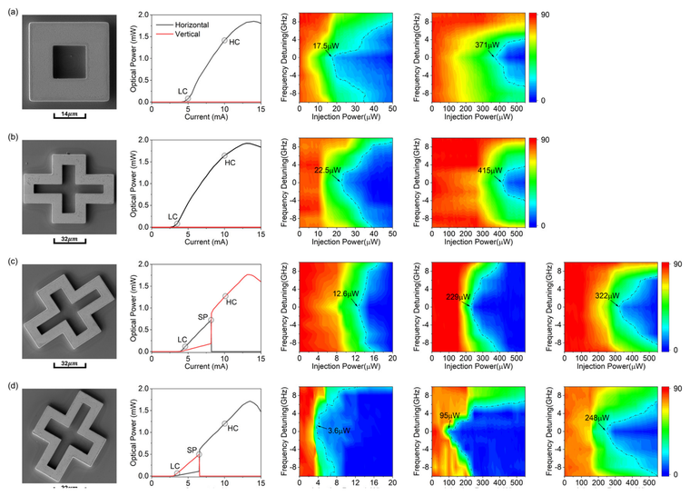
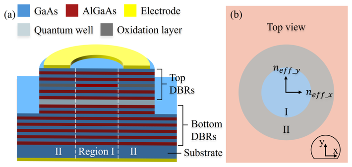
Large-Scale Fabrication and Analysis of Polarization Behavior in VCSELs with Tailored Apertures
Journal of Lightwave Technology 43, 6819–6827, 2025
[paper]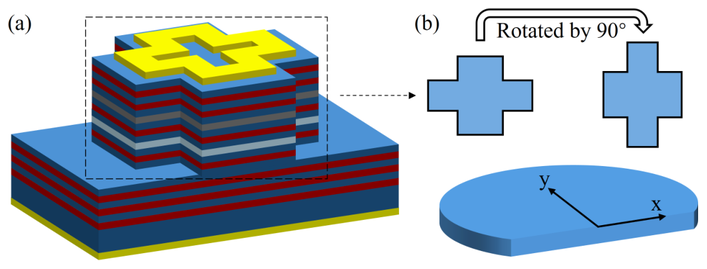
Mesa Orientation Engineering for Polarization Locking in VCSELs
IEEE Photonics Conference (IPC), 2025
[paper] [arXiv]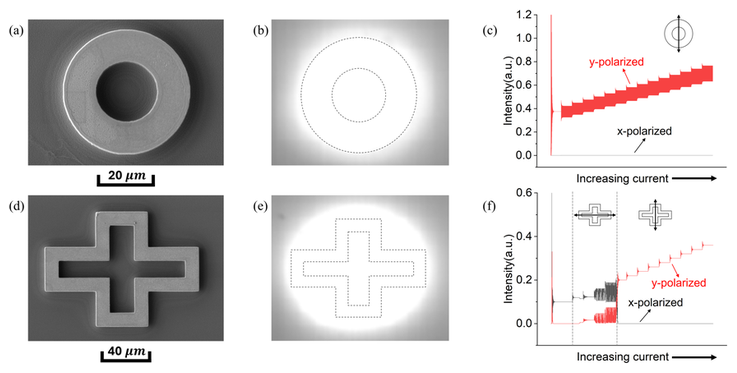
Engineering polarization switching in VCSELs with custom aperture shapes
Conference on Lasers and Electro-Optics (CLEO): Science and Innovations, 2025
[paper] [arXiv]Where the physics comes back in: new tasks that ask how much of the physical world these models actually recover, from polarization hidden in an RGB image to scenes degraded by rain, snow and fog, and hypotheses that must stay consistent with the observations they were derived from.
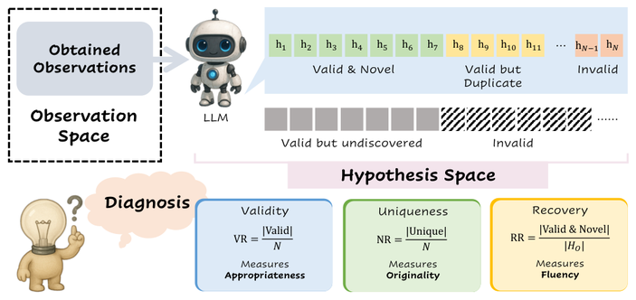
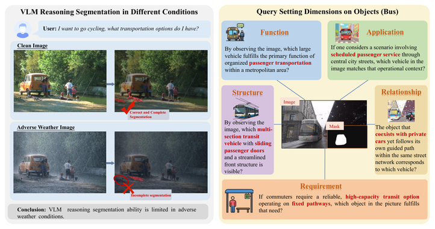
WeatherReasonSeg: A Benchmark for Weather-Aware Reasoning Segmentation in Visual Language Models
European Conference on Computer Vision (ECCV), 2026 · *equal contribution
[paper] [arXiv]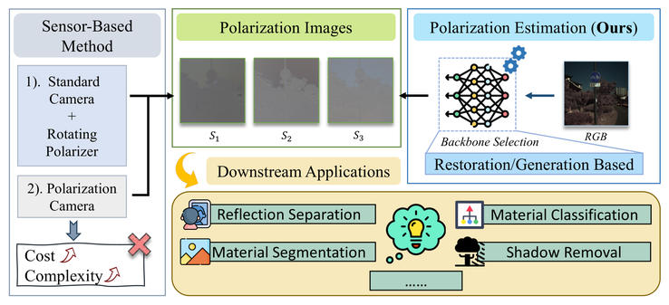
RGB-to-Polarization Estimation: A New Task and Benchmark Study
Conference on Neural Information Processing Systems (NeurIPS), 2025 · *equal contribution · ✉corresponding author
[paper] [arXiv] [code]
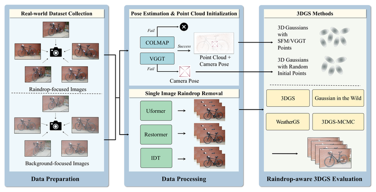
RaindropGS: A Benchmark for 3D Gaussian Splatting under Raindrop Conditions
arXiv:2510.17719, 2025
[arXiv]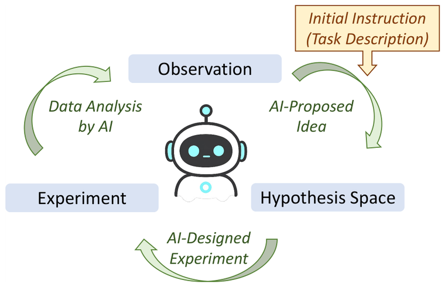
Auto-Discovery-Bench: Diagnosing Structured State Tracking in Oracle-Guided Discovery
arXiv:2502.15224, 2025
[arXiv]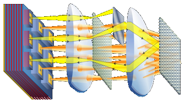
VCSEL-Based All-Optical Ising Machine
US Patent Application 19/068,345 (published as US 2025/0279627 A1), 2025
[patent]Journal reviewer: Optics Letters, Applied Physics Letters, APL Photonics, Optical Materials Express, IEEE TCSVT
Conference reviewer: CVPR, ICCV, ECCV, NeurIPS, ICML, ICLR
Teaching: Teaching assistant, EE2026 Digital Design, NUS